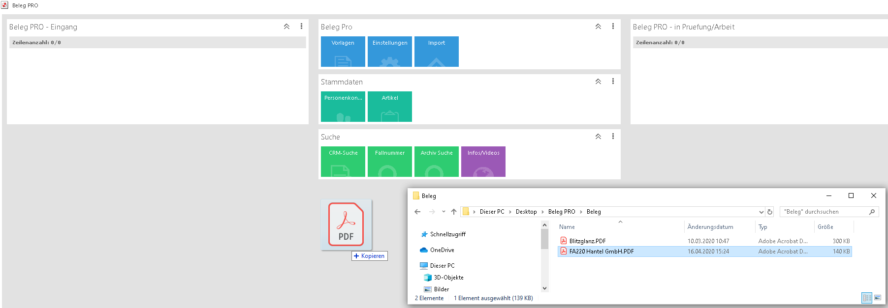
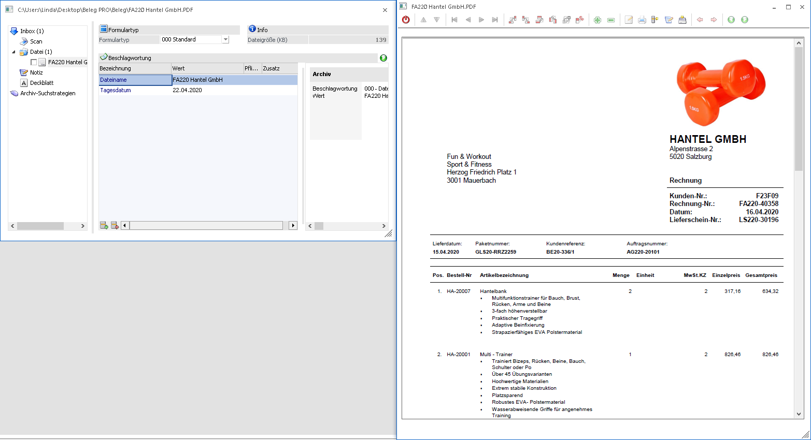
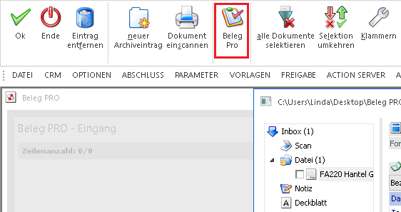

Damit das Modul Beleg Pro verwendet werden kann, ist eine PDF-Datei notwendig. Die Qualität dieser PDF-Datei sollte dementsprechend gut genug sein, damit die OCR-Erkennung die Texte und Werte richtig erkennen kann.
Anschließend muss die Rechnung mittels "Drag&Drop" in die WinLine gezogen werden.

Hinweis
Falls kein "Drag&Drop" möglich sein sollte, dann wurde die WinLine eventuell "als Administrator" gestartet. Bitte die WinLine in diesem Fall einmal neustarten (ohne "als Administrator" ausführen) und nochmals versuchen.
Wenn das "Drag&Drop" erfolgreich war, öffnet sich automatisch der Menüpunkt "neuer Archiveintrag" und die Datei und die Vorschau ist ersichtlich. (Sofern die Vorschau mit dem Button "Vorschau" aktiviert ist)

Um nun den Beleg über das Modul "Beleg PRO" eingehen zu lassen und den Wizard zu starten, muss der Ribbon-Button "Beleg Pro" angewählt werden.

Hinweis
Alle zuvor eingetragenen Werte im Menüpunkt "neuer Archiveintrag" werden bei der Anwahl des Buttons "Beleg Pro" verworfen. Somit hat dieser Menüpunkt bzw. die dort eingetragenen Werte grundsätzlich keine Relevanz für den Belegeingang über das Modul "Beleg PRO"
Anschließend wird der Menüpunkt "neuer Archiveintrag" geschlossen und der "Beleg Pro - Wizard" öffnet sich.